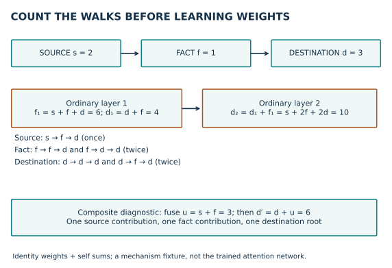
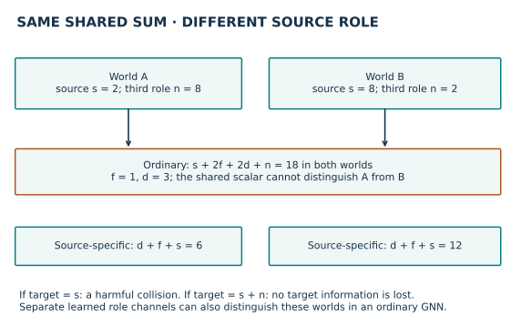
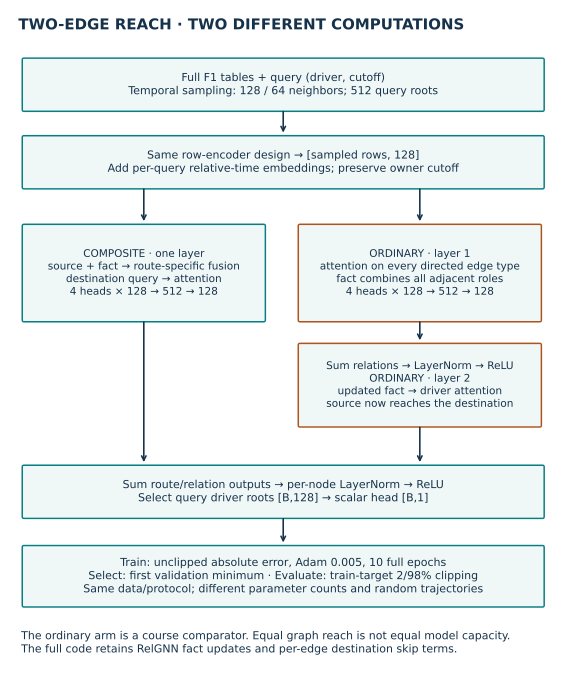
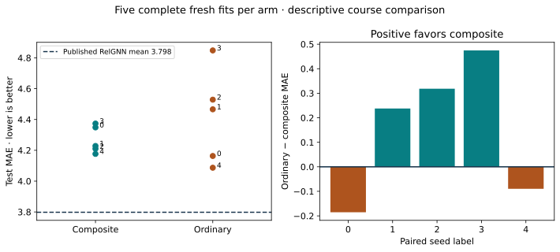

Year 4 · Quarter 3 · Lesson 142
Many-to-many edges: trace where the signal mixes
1 · A graph can preserve the database while an update loses a distinction¶
Lesson 141 built a composite route: source → fact row → destination. It showed how two physical edges can form one model update. Now ask the harder question: what goes wrong if we treat those edges as two ordinary updates?
Your tangible win is to trace a message, identify an avoidable return path, and explain what evidence would be needed to blame a benchmark error on that path. This supports our mission of defending relational deep learning with reproducible evidence rather than assuming that a new architecture must help.
A row is one database record. Its primary key uniquely identifies it. A foreign key points to one row in another table. A many-to-many relationship allows each entity on either side to relate to several on the other: one driver enters many races, and one race contains many drivers. A junction or fact table records each occurrence; one result row refers to a particular driver, race, and constructor. The fact can contain important attributes such as a finishing position. It is not disposable plumbing.
The graph keeps the fact as a node and foreign keys as edges. Keeping these rows and links can preserve the database information. A learned embedding, a fixed-width numerical summary of a node, is a different object. Its aggregation can mix distinctions the graph still contains. “Lossless graph conversion” does not imply “lossless message passing.” Primary reading: RelGNN v2 §§3.1–3.2 and equations 1–3.
Retrieve before reading: Which way does a foreign key point? Why is (driver, date) a stronger prediction identity than driver alone? Which split may select a model checkpoint?
2 · Count walks before learning weights¶
A message is a numerical contribution sent along an edge. A layer updates all nodes from the previous layer's embeddings; it is synchronous. Updating a fact and immediately using its new value to update a driver inside an ordinary layer would silently change the model.
Start with an exact, deliberately simple linear diagnostic. Let s be the source value, f the fact value, and d the destination value. The graph is s ↔ f ↔ d. Each ordinary layer adds the node's previous value to the sum of its neighbors' previous values. The self contribution is often called a residual or root term. We use identity weights and no activation to count paths transparently; this is not the trained attention network.
Predict before revealing: with s=2, f=1, d=3, what value reaches the destination after two ordinary layers? How much came from the original source?
At layer 1, f₁=f+s+d and d₁=d+f. At layer 2, d₂=d₁+f₁=s+2f+2d=10. The source first arrives at layer 2. The fact contributes twice: it stayed at the fact then moved, or moved to the destination then stayed. The destination also contributes twice: it stayed twice, or traveled d→f→d.
This is a walk-counting result under specified weights. It illustrates the paper's redundancy and imbalance arguments. It does not establish that every trained GNN duplicates information with coefficient two: attention, learned transforms, normalization, and root design change those coefficients.

For a transparent composite diagnostic, fuse u=s+f for this source–fact–destination route, then update d′=d+u=6. There is no d→f→d return inside this update. The fact still contributes. Removing the fact altogether would erase event attributes and could collapse repeated events with different times.
CHECK: set s=0,f=0,d=1. Ordinary output is 2; composite output is 1. Set only f=1: ordinary is 2; composite is 1. Set only s=1: both are 1. These interventions isolate the coefficient of each input.
3 · A hub can mix roles before the destination chooses¶
A bridge fact has two foreign key roles. A hub has three or more. A result row connects driver, race, and constructor. If the source is race and the destination is driver, constructor is another role—not necessarily noise. Whether it is useful depends on the target.
Add a third neighbor with scalar value n. The same ordinary diagnostic gives f₁=f+s+d+n, then d₂=s+2f+2d+n. A single shared intermediate representation has mixed the source with the third role before the destination receives it.
Predict: compare (s,n)=(2,8) and (8,2) with f=1,d=3. Can the destination's second-layer scalar identify which world it saw?
Both ordinary outputs equal 18. The source-specific composite outputs are 6 and 12. If the target depends on s, that ordinary representation has a collision: distinct inputs needing distinct predictions became identical. No downstream function of that scalar alone can recover the difference. If the target is instead s+n, the two worlds legitimately share the same target, and the collision causes no problem.

The qualification matters. Distinct learned maps per relation, enough hidden width, or separate channel blocks can preserve source roles even with ordinary message passing. Our collision is a proof about a specified equal-weight scalar sum, not an impossibility theorem for heterogeneous GNNs. Conversely, composite routes also compress information; their later route summation can still create collisions.
The paper's motivation is a useful inductive bias: an architectural preference for preserving particular relational interactions. It is not a universal ordering of predictive performance. RelGNN §3.2 and §4.2.
TODO 1 — incoming sums: implement edge_sum. Preserve the destination axis and every trailing feature/head axis. Duplicate destination indices mean sum, not overwrite. The function feeds both neural arms.
TODO 2 — route fusion: implement route_fuse. Select only the declared source role, sum its incoming values, apply its transform once per fact, and add the transformed fact. Applying a biased source transform before aggregation would repeat the bias when several sources are present and omit it on empty neighborhoods. This function feeds the composite model.
4 · What the full networks actually compute¶
An attention head weights incoming messages using a destination query and source keys. For each edge, a dot-product score is divided by the square root of the head width. Softmax exponentiates scores and divides by their sum over messages with the same destination and head. The resulting nonnegative weights sum to one. Weighted source values are summed; multiple heads are concatenated and projected back to the model width.
Both arms begin with the same kinds of table-specific row encoders, neural networks that map heterogeneous columns to 128 numbers. A query-relative time encoder adds information about the difference between the prediction cutoff and a sampled row's event time. Each timestamp is compared with the cutoff of its owning query, not the largest cutoff in the batch.
Composite arm: one released RelGNN layer. For each ordered source/fact/destination route, fuse transformed source and fact features, then attend from the destination to those fused messages. Each of four heads produces 128 channels: concatenation has 512 channels, projected to 128. Sum route outputs, normalize each node's channels with LayerNorm, apply ReLU (replace negative values by zero), select queried driver rows, and use a scalar head. The release also updates fact representations from route intermediates. The complete code preserves this behavior.
Ordinary arm: two layers of edge-type-specific attention. Each directed foreign key edge and reverse edge gets its own parameters. Every layer reads the old embeddings of all types, sums incoming relation outputs at each destination type, then applies the same kind of node-wise LayerNorm and ReLU. A second layer lets source information traverse the fact to the driver. This is a reasonable course comparator, not the paper's published GNN baseline.

Both arms have two-edge reach, 128-channel embeddings, four heads, and the same row/time/head components. The number of attention modules, normalization steps, and parameters differs. Therefore this is an architecture comparison, not an experiment that changes only one scalar mechanism. Sampling settings match, but random-number consumption differs, so realized sampled subgraphs are not guaranteed identical across arms.
Inspect the visible full models, live functions, and trainer. The portable notebook includes their code inline. The original release serves as an independent composite oracle; ordinary attention is checked against PyG's implementation at identical weights.
5 · Make “full reproduction” a checkable claim¶
Our selected published target is RelGNN Table 2, rel-f1/driver-position: 3.798 test MAE, averaged over five reported seeds. MAE, mean absolute error, averages |prediction−target|; its units here are finishing-position units. Lower is better. Paper Table 2 · Pinned release.
The full archived task contains 7,453 training, 499 validation, and 760 test queries. Each label averages recorded finishing positions in (cutoff,cutoff+60 days]. A driver without a future result does not receive a target row. This population is conditional on future participation; it is not a prospective roster of all drivers. Raw-table reconstruction independently checks all labels and query identities.
| Contract | Both fresh arms |
|---|---|
| Data | Complete checksum-pinned F1 archives; fresh materialization shared by the ten fits |
| Inputs | Same inferred column types, GloVe features, full released snapshot and feature statistics |
| Temporal sample | Uniform fanouts 128/64, bidirectional subgraphs, batch 512 |
| Training | Seeds 0–4, ten complete epochs each, Adam 0.005, absolute-error loss |
| Selection | First strict minimum validation MAE; test evaluated after checkpoint freeze |
| Output | Clip evaluation predictions to training-target percentiles 2/98; training is unclipped |
| Comparison | Five paired seed-level error differences; no test-driven tuning |
An epoch visits every training query once. Adam is the optimizer that adjusts parameters from loss gradients; 0.005 is its learning rate. Before creating it, an evaluation-mode training batch initializes lazy encoder parameters, matching the documented reconstruction. Validation sampling is stochastic; the selection score and final re-evaluated validation score can differ.
The release does not supply the complete historical optimizer, schedule, initialization sequence, or feature-type cache. These fresh fits use frozen reconstructed training, not an exact historical protocol. Lesson 141's five fresh fits missed the ±0.20 descriptive MAE band; we do not retune to erase that finding. Its released checkpoint also required a qualifying-column type reconstruction. L142 trains fresh weights on the same freshly inferred types in both arms; no checkpoint-compatible replay is pooled into this experiment.
Predict before revealing: must the composite architecture win on every seed? Would a win prove that destination echoes caused the ordinary model's errors?
| Evidence | Validation MAE | Test MAE | Parameters |
|---|---|---|---|
| Published RelGNN five-seed mean | — | 3.798 | — |
| Fresh composite, five seeds | 3.133519 ± 0.185000 | 4.267390 ± 0.087863 | 10,553,601 |
| Fresh ordinary, five seeds | 3.045583 ± 0.127300 | 4.418519 ± 0.305754 | 20,519,169 |
Mean paired test gap (ordinary − composite): +0.151129 ± 0.278950 MAE (sample SD across five seed pairs). Composite versus paper: OUTSIDE_TOLERANCE, using the frozen ±0.20 descriptive band. 12,590 held-out predictions independently aligned and rescored. Historical identity remains NOT_ESTABLISHED.
Composite wins three of five test seed pairs, while ordinary attention has the lower mean validation MAE. The sign describes these frozen runs only. Neither a win nor a loss identifies the bridge mechanism as the cause; the comparison also changes capacity and normalization depth.

For seed j, define the paired gap as MAE_ordinary,j − MAE_composite,j. A positive gap favors composite. Pairing uses the same seed labels and full query identities; it does not make the random trajectories identical. Sample standard deviation describes variation among these five fits. Repeated drivers and dates mean query rows are not independent experimental replicates. We do not manufacture a confidence interval by treating all rows as independent. This F1 test split has also been inspected in earlier lessons: these are fresh training runs, not a fresh held-out test population.
TODO 3 — keyed paired errors: implement paired_loss_gap. Align both prediction vectors by (driver,cutoff), reject duplicate or missing keys, then subtract per-query absolute errors. Shuffling predictions with their keys must leave the answer unchanged. Your implementation rescoring the author files is a learner exercise, not evidence that you trained those models yourself.
The released numerical row encoder can produce nonfinite gradients for missing-value columns. We retain and count them in both arms. Source parity proves correspondence with the implementation, not healthy optimization. This limitation weakens any causal claim about the graph operator.
6 · What you can defend now¶
Read the complete protocol and evidence ledger, measured summary, and compact reference. The default notebook executes neural fixtures and independently scores every author prediction. Its explicit full-data gate trains fresh models in the pinned GPU environment. The validation run of that gate is recorded separately and excluded from the five primary seed means.
The aggregate cloud cap is **US$10**, including preparation, all seeds, failures, and validation. A pilot for each arm precedes the remaining fits; the runner reserves worst-case worker timeouts and retains $3 overhead. If the forecast cannot fit, it stops and labels the unfinished scope. Credits never raise this limit. Current provider pricing.
EXIT — write before checking: draw a driver–result–race route with a constructor neighbor. Derive the destination return term for our linear diagnostic. Construct two inputs that collide under that diagnostic but have different source-specific targets. Then explain why a full-data MAE difference does not prove this collision caused the difference in trained networks. Name one control you would add: capacity matching, controlled normalization depth, fixed sampled subgraphs, or a narrowly defined operator intervention.
Author checks leave learner status PENDING_WRITTEN_DEFENSE. Historical training identity remains NOT_ESTABLISHED; the whole paper is NOT_RUN. Live Colab and deployment are NOT_CHECKED unless separately recorded. Ask the teaching agent follow-up questions, or paste your derivation and defense for feedback. Lesson 143 will build on this distinction between a runnable RelGNN experiment and a defensible reproduction claim.
Carry this forward. Carry both the mechanism and its limits into Lesson 143: reproducing a model requires checking feature meaning, training history and query identity as well as the score. Continue to Lesson 143.